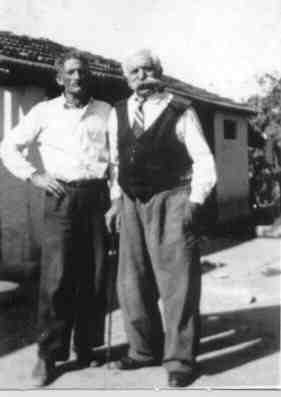
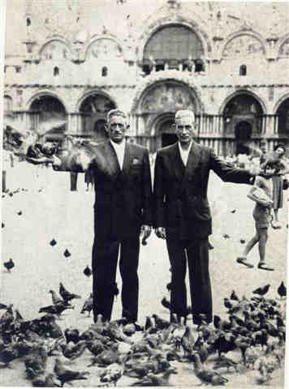
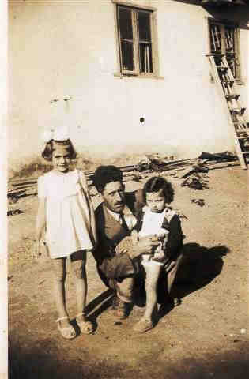
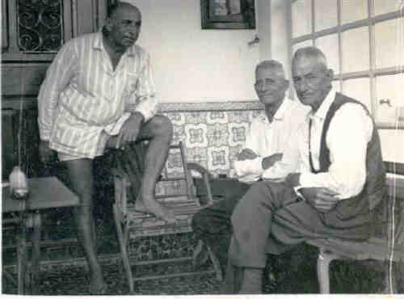

Ercole Petrella
- Nascido em: 15 Nov 1889, Pratola Peligna , L'Aquila, Abruzzo
- Casamento: Maria Bonifácio em 1915
- Falecido: 25 Jul 1964, São Paulo, Sp com 74 anos de idade

 Notas Gerais: Notas Gerais:
Nasceu em 15-11-1889 (foi registrado em 19-10-1890), em Pratola Peligna.
C.as. A seguir, vamos relatar trechos das informações fornecidas por Carlinhos Natrielli.
"- Quando ele veio de Ribeirão Preto, começou a trabalhar com o pai da Maria, na Vila Prudente. O Clemente mexia com padaria, leiteria, vacas. Nesse trabalho, teve início o namoro que terminou em casamento."
Casou com Maria Bonifácio nascida em 29-10-1895 em Nápoles - Itália.
Maria era filha de Clemente Bonifácio e Anunciata di Franco.
O casamento de Ercolino e Maria foi realizado na Igreja do Brás - SP-SP.
Quanto a sua trajetória de vida, sabemos que em 1898 chegou a Neca Junqueira; em 1915, no seu casamento, estava em São Paulo; de 1916 a 1918 (nascimento da Oswalda e do Roque), morava na rua do Oratório e, em 1920 quando do falecimento de seu pai, Rocco, estava morando em Rio Grande da Serra - SP.
Em 1934, veio para o Brooklin e morava na rua Francisco Dias Velho esquina com Brito Peixoto; em 1938, morava na mesma rua, porém no n° 840 e, em 1939, foi para o Morumbi.
Segundo Carlinhos Natrielli, "-Quando o Ercolino veio para o Brooklin, comprou o terreno na margem do rio Pinheiros, para montar a olaria. Este terreno estava localizado na rua Francisco Dias Velho, depois da atual casa da Ciata e do Miro, e estendia-se até o Rio Pinheiros..
Depois, a Light, que precisava controlar a água do rio Pinheiros para fornecer para a usina hidroelétrica de Cubatão, comprou o terreno."
N. as. a Usina da Traição, nada mais é que uma usina elevatória que serve para inverter o curso do rio quando necessário.
O Canal Pinheiros teve origem na retificação do Rio Pinheiros, iniciada no final da década de 30 e concluída em 1957. Tinha como principal objetivo o aumento da geração na Usina Henry Borden, através da reversão de suas águas e as do Rio Tietê para o Reservatório Billings. A Usina Elevatória de Traição divide esse canal em dois: o Canal Pinheiros Inferior, trecho compreendido entre a confluência com o Rio Tietê ("Cebolão") e a Usina Elevatória de Traição, e o Canal Pinheiros Superior, trecho compreendido entre as usinas elevatórias de Traição e Pedreira 5.
Prosseguindo a narrativa do Carlinhos, "- Depois que ele vendeu o terreno para a Light, comprou um terreno no Poço Fundo (atual Colégio Pio XII), e outro na rua Sílvio Transmontano esquina com a Av. Morumbi. Neste, construiu a sua casa e no outro, lá em baixo, tinha duas ou três olarias. Lá era tudo mato. Quando ele mudou para lá, não tinha água encanada e nem luz, era tudo no lampião.
Lampião a querosene, bombeavam, punham as camisinhas, às vezes ia apagando devagar, alguém gritava: - Precisa bombear.
Essa rua chama Sílvio Transmontano, porque, passando o rio, logo quando começava a subida da Av. Morumbi, do lado direito, eram as terras do Transmontano que plantava chá mate, e do lado esquerdo era a casa do Ercolino. Na mesma rua do Ercolino mais para cima e do lado direito, morava o Tomás, que criava vacas e tirava leite.
Nessa ocasião, a travessia do rio Pinheiros era feita por balsa, depois fizeram a ponte de madeira. Quando a Light estava retificando o Pinheiros, fizeram um braço de rio e a passagem ficou com duas pontes. Posteriormente, tiraram a do braço e ficou só a principal, que era a mais comprida.
O Tomás, depois de tirar o leite, soltava as vacas para pastar. Elas atravessavam a ponte e vinham pastar deste lado que tinha mais capim, e depois de comer, ficavam na ponte, ruminando.
Quando os caminhões queriam passar, elas não saiam , tocavam a buzina e nada, precisava sair, pegar uma varinha e cutucar as vacas para elas saírem, para a gente passar.
Era tudo terra e quando chovia os caminhões, para subirem, tinham que por correntes nas rodas traseiras.
Na olaria, tinha três burros que puxavam a caçamba com o barro lá de baixo até a pipa. Nesta, havia dois burros, que ficavam rodando. Não tinha nada de eletricidade.
A garotada não gostava de montar no burro de pipa porque eles só rodavam e não saiam do lugar.
Tinha outra caçamba também que trazia a terra para ser misturada ao barro; portanto, havia a medida certa de barro, de terra, e de areia. O barro ficando muito forte, quando o tijolo ia para o forno, trincava, se ficasse fraco, o tijolo esfarelava .Os pipeiros é que tinham que fazer a fórmula. Um deles, o Memo padrasto da Maria, casou com a tia Virgínia, era craque.
O Emílio marido da Oswaldina, também trabalhava com o Ercolino.
Para entregar os tijolos, o Ercolino tinha um caminhão Ford 36 de cor verde, que era dirigido pelo Roque.
Em meados de 1940 - 41, o Ercole comprou um carro de passeio Ford 36 de cor cinza chumbo, que também era dirigido pelo Roque.
O Ercolino e a tia Maria eram muito humanos e igualitários. Na casa deles, os empregados eram tratados como da família. Sentavam todos a mesa, comiam macarronada, tomavam vinho.
Nas festas de Natal, a mesa era montada com tábuas em cima de cavaletes. Colocavam uma toalha em cima, e logo logo ela ficava repleta de comidas.
Depois da refeição, as frutas natalinas eram jogadas de sacos sobre a mesa. Ficava todo mundo quebrando com os martelinhos, ou garrafas que o pessoal batia sobre as frutas, socando (antigamente, eram garrafas de vidro e não havia plástico).
Nas casas do Nunzio, do Ercolino e do meu pai Carlos, lá na Saracura pequena, todas elas tinham forno de barro.
Chamava Saracura porque era o nome do rio que saia do túnel da Av. 9 de julho, e, onde é hoje o hospital Sírio Libanês, tinha uma fonte. Esta rua era chamada a rua da fonte. Água limpa e cristalina.
Nas festas, sempre havia baile ao som das sanfonas. O Ercolino gostava de cantar e, no seu vasto repertório, as mais freqüentes eram:
Marianní - Quel Mazzolin di fiore."
A seguir, vamos expor o que seu neto, Carlos Antônio Natrielli (Pio) lembrou de seu avô e sua família:
"- O que a família contava é que vieram de Ribeirão Preto para São Paulo, depois meu avô foi trabalhar numa fábrica de pisos e ladrilhos em Santos, aí voltou, moraram na rua do Oratório, depois tiveram padaria e açougue, na região da Moóca, Vila Prudente, até depois eles virem aqui, no Brooklin, quando começou o negócio com olaria.
Ficaram primeiro aqui no Brooklin e depois para o Morumbi, quando desapropriaram da Light, ele comprou o terreno que, no futuro, se tornaria o colégio Pio XII; montou as olarias lá, e fez a casa na Av. Morumbi.
Eles mudaram para lá, eu acho que, em 38 , porque meu pai namorava com a minha mãe.
Do meu avô Ercole, o percurso que ele teve foi mais ou menos esse.
No Morumbi, eu tive um relacionamento e um contato com ele direto, espetacular. Nem os filhos tiveram esse contato, porque eu era criança, disponível, e interessado em saber, inclusive por eu ter facilidade de assimilar essas coisas práticas. Nesse contato com o vovô Ercole, ele me ensinava. Eu vejo o vovô como um professor, não de coisas de escola, mas de coisas que a gente faz na vida. É o brinquedo, é o conserto de um equipamento.
Do vovô, ele tinha uma oficina bacana, então eu fazia carrinhos imitando as carroças da olaria, com as ferramentas dele, e ele me ensinava a usar o arco de pua, como trabalhar, como pregar, como serrar, e eu fazia, eu via as caçambas na olaria, eu usava dobradiça e fazia basculante, as carrocinhas e usava o cachorro, em vez do cavalo ou do burro. Era uma coisa fantástica, e os primos, que iam em casa, admiravam.
E tudo graças aos ensinamentos do vovô.
Outra coisa, o vovô Ercole me ensinou a apanhar frutas. Ele me ensinou que eu não devia deixar bater a fruta.
Ele tinha um pomar muito grande, eram 3.000 m2 e tinha frutas , goiabas, laranjas, tudo, tudo, tudo, maçã, abacate. Tinha um abacateiro no galinheiro, que eu subia e levava comigo, uma corda que tinha numa das pontas um saco preso, e, na outra ponta, eu pegava e amarrava num gancho que era essa vareta da cremona de janela, eu pegava e laçava o galho, puxava para ficar mais próximo do centro, aí apanhava as frutas e colocava no saco sem bater, e depois descia o saco com a corda escorregando.
A mandioca, eu arrancava e ia devagar porque ele não admitia que quebrasse um ramo. E uma coisa que era bacana, quando o pessoal ia visitar (o pessoal visitava muito o vovô e a vovó), as primas de Pinheiros, a tia Vincenza, as outras primas lá de Pinheiros, e sempre que eles iam lá em casa, sempre ganhavam alguma coisa , ou era abacate, ou mandioca, ou uma outra fruta, então ele chegava e falava:
- Vai arrancar ......
A satisfação dele era servir. Ele dava festas, então eu fui aprendendo a plantar mandioca , o milho, a colher frutas.
Outra coisa foi com relação à criação. Eu, com 14 anos, já tinha a capacidade de executar a seqüência desde matar até limpar, esquartejar um cabrito, uma leitoa, frango.
Quando matavam um animal maior (porco, cabrito), os dois sempre estavam juntos (Ercole e Nunzio).
O tio Nunzio matava o porco, aí já eram os porcos que eram para engorda, e sempre matavam dois, um era para distribuir para a família, faziam o mutirão, então eram os ajudantes de caminhão, motorista.
O tio Nunzio era especialista em matar, então aí eu ficava curioso em ver o resultado quando abria o porco, para saber se ele tinha acertado o coração; e eu também, depois que eu comecei a matar, não via a hora de abrir para ver se tinha conseguido acertar. O cabrito já era outro processo.
O vovô me ensinou que, depois de matar o cabrito, era necessário inflá-lo, para descolar a pele da carne. Enfiava uma varinha num corte que era feito na perna do animal, (as vezes usava até canudo da folha do mamoeiro. Tinha que enfiar e assoprar. Doía as bochechas, de tanta força que fazia.
Essas coisas ele me deixou de lembrança , recordar isso me emociona, porque para mim foi muito importante, eu tive a oportunidade de aprender essas coisas de um convívio estritamente pessoal.
Ele era uma pessoa tranqüila, amorosa, e o prazer era ver os outros contentes. Não havia quem não fosse lá em casa que não levava alguma coisa.
Eu tratava dos porcos também , a batata doce cozinhava. Não é que cozinhava como lavagem, junto com o resto de comida não, cozinhava a parte que as vezes eu até comia. Tinha também umas espigas de milho branco que ele plantava, que também era feita a mesma coisa.
Meu avô, na cozinha, ele não fazia, ele aprovava, se estava bom ou não, ele orientava, e a vovó Maria também foi uma companheira fantástica.
As pessoas iam lá em casa pedir conselho para a vovó Maria. Era uma pessoa que tinha uma seriedade fantástica, muito querida.
O vovô Ercole gostava do vinho e, às vezes, ficava exaltado, principalmente na companhia do tio Nunzio. Ele sozinho tomava o seu vinho. Não era tanto, mas quando estava junto com o Nunzio, parece que a dose era maior, então ele explodia. A minha vó ficava serena, calma, não falava nada porque ele estava um pouco alterado, aí depois de passar a "alteração", ela pegava e falava com ele e sempre ganhava.
Eu estou vendo quanto é importante isso hoje, de ficar calado, de esperar o momento que a pessoa fique tranqüila para você pegar e fazer, comentar sobre alguma coisa. Inclusive, determinadas perguntas que a gente acha maldosas, se a pessoa faz querendo jogar uma isca, coisa que eu era muito ingênuo, pegava. Hoje eu percebo que se a gente tiver tranqüilidade e pensar um pouco, a gente não responde a pergunta, a pessoa torna a perguntar e você não responde, a pessoa fica completamente desarmada, e até envergonhada.
Então esse convívio com os meus avós, com meu pai (fomos grandes companheiros), do tio Roque também (desde a época da olaria, quando ele passava e me levava nas olarias com ele), fez com que eu, aos 13 anos já dirigisse.
Os amigos e parentes que iam para a casa do vovô no Morumbi, tanto de bonde, descendo no Aleotti, ou de ônibus descendo na Av. Santo Amaro, tinham que pegar táxi. Eles iam mas não podiam voltar.
Se meu pai estivesse em casa, ele até trazia, mas eu, com 7 ou 8 anos. acompanhava meu pai, e ficava do lado dele na direção. Depois, ele me deu o acelerador, o breque. Aí, eu ainda pequeno, já dirigia ao lado dele.
Com 13 anos, ele já me deu o carro, eu ia nas olarias, eu ia para Campo Limpo, a lagoa. Com 14, 15 anos, não tinha tanto movimento, não tinha guardas, então eu aprendi a dirigir automóvel.
Quando os meus parentes iam nos visitar no Morumbi, eles mandavam levar a prima até o ponto do ônibus, lá no Brooklin. Nossa, para mim era uma maravilha!
Aos 16 anos, meu pai estava terminando de montar a olaria no Campo Limpo, eu peguei o caminhão que tinha disponível e fui lá, aplainar o lugar dos terrenos da olaria.
Com 17 anos, meu pai me arrendou uma olaria, montei um porto de areia, então comecei a trabalhar cedo. Aí foi desenvolvendo, e as coisas mudando até o ponto de eu retornar aos estudos, parar de trabalhar e a fazer a Faculdade. Aí montei o escritório aqui, abri em 70; eu ainda estava no 2° ano da Faculdade. Em 72, lançamos o loteamento e fui adquirindo, aos poucos, a confiança dos parentes. Isso me deixa muito feliz pela confiança que o pessoal teve, desde o meu início até hoje.
Com relação ao trabalho, eu tive toda e total confiança dos meus pais e dos meus irmãos, ao dirigir o patrimônio que eles já tinham iniciado, além de transformar, remodelar e fazer algumas transformações.
Até hoje eu administro. Quando exponho alguma coisa para ser apreciada, acaba sendo aquela pergunta:
- O que você acha que é melhor?
E muitas coisas.
Você faz! Depois, você fala!
É uma confiança que, para mim traz muita recompensa nesse relacionamento.
Na culinária, a vó Maria era fantástica. A paciência que ela fazia as coisas. A gente vê que ela fazia com amor. Eu aprendi com a vovó a qualidade dos pratos e das comidas e com o vovô Ercole, a ser o observador e palpiteiro:
- Mais assim, mais assado!
Com esse aprendizado e essa convivência, quando a Geralda começou a cozinhar, eu ia dando palpites.
Hoje, nós fazemos uma feijoada, que foi uma das primeiras a ser escaldada, eliminando o excesso de gorduras, pré-fritando determinadas partes dos ingredientes e outros tratamentos para que fique mais leve.
Eu lembro a delícia que era o minestrone que a vovó fazia, era batata doce, o macarrão rigatoni, a escarola, o feijão , aquela sopa meio agridoce por causa da batata doce. Aquilo era fantástico.
A polpeta eu aprendi a fazer também.
Eu gosto muito e faço a alichela, a beringela, o pimentão.
Tinha as comidas típicas para cada ocasião: Natal a Páscoa. Então, foi gostoso eu conviver e aprender a viver isso aí da infância e, depois, o meu pai resgatando, relembrando tudo novamente.
Da minha mãe, lembro que ela era uma companheira fantástica, com assistência aos filhos, muito calma e participativa.
Era professora particular, minha mãe auxiliava nas lições; foi uma companheira inclusive no trabalho de meu pai, porque ele foi um grande fornecedor de areia, tijolos, pedras e minha mãe fazia a marcação do movimento diário. Até na época do lampião, vinham os vales, a maioria eram vales, os funcionários da olaria, os caminhões. Ela fazia a marcação porque tinha outros que faziam carretos também.
Minha mãe foi essa companheira, no trabalho e na família.
Uma coisa que eu admiro do meu pai, foi ele, a partir de 1945 ou 46, conseguir tirar 21 dias de férias todos os anos, para passar a temporada em Poços de Caldas.
Passava o Natal, passava o réveillon. No primeiro sábado, ele pegava a família, ficava num hotel, às vezes levava até a Tina e a Ciata, ( o hotel era sempre o mesmo, hotel Paulista ).
Esse foi outro momento de convívio com o meu pai, porque a gente ia nas termas, tomava os banhos, aí tinha os passeios que a gente ia fazer na chácara , era gostoso.
Em janeiro, é época do figo, da uva, do pêssego, ocasião que nós íamos passar a tarde nas chácaras, comendo as frutas. Tinha o dia que a gente ia passear a cavalo.
Comecei com o carneirinho, depois o cavalinho, depois o cavalo, aí Boate do Palace. Aí, com 15 anos, já freqüentava a Boate. Não era aquela Boate, era um salão de festas, e ia as tias, primas, as amigas. Então eu tive, desde a infância até moço, o convívio com a família e usufruí sempre dessas amizades.
Isto foi até meu pai se aposentar, em 72. Quando ele passou a batuta, ele ainda não tinha 53 anos. Aí, ele ia para Poços de Caldas e ficava 3 meses . E outra coisa que eu participei com meu pai foi o aprendizado do tênis.
Nós entramos no Banespa e começamos a aprender tênis juntos. Depois, eu parei e ele continuou. Aí, depois, eu recomecei, ai desenvolvi mais em tudo.
O meu pai, no jogo, foi um professor fantástico. Ele me deu de Natal, quando eu tinha uns 8 anos mais ou menos, uma mesa de ping-pong . Eu era pequeno, então a gente ia jogar ping-pong e ele não dava moleza de dar bolinha de bandeja não. Ele jogava esforçando, com isso, eu acabei aprendendo e desenvolvendo . Formamos uma equipe, um timezinho, PENA (Petrella e Natrielli), e nós disputamos alguns torneios. Quem participava era o Caetano, o Núncio, o Nenê, o Nuncinho, o meu pai, o Carlinhos.
Outra coisa muito bacana na família, que eu lembro desde criancinha, foi a participação nas festas, que era no vovô Carlos, na Saracura, no Morumbi, e no tio Nunzio, aqui no Brooklin.
Eram as três famílias super unidas! A gente com 10, 12 anos, dançava, com prima, com tia, as empregadas faziam parte da família, não eram empregadas, eram mais uma da família e foi aí que eu fui desenvolvendo o gosto pela dança. E hoje, a dança me dá um imenso prazer".
C.as. Quando a Clementina (filha do Ercole) nasceu em 26-12-1938, eles moravam na rua Francisco Dias Velho, 840 e a Marianina era vizinha, morando no n° 820.
Maria Bonifácio, depois do nascimento da sua filha, foi perdendo a lactação e quem amamentou sua filha Tina foi a Marianina, que tinha dado à luz a Neuza, em 20-11-1938, ou seja, 26 dias de diferença da Clementina. Essa lactância durou seis meses.
Por isso, Ercole mudou para o Morumbi após o mês de maio de 1939.
A seguir, vamos transcrever o texto entregue ao Emílio Vieira, escrito pela sua tia Marlene Ferraz relatando fatos e particularidades vividas pelo casal Emílio Vian e Oswaldina Petrella (primeira filha do Ercole)
-" A Marlene, minha tia querida, entregou este belíssimo texto (abaixo) para mim no dia dos pais.
emocionante...
A estória (história, na verdade) "tudo graças a um anel" é bem escrita, bem vivida e de emocionar."
TUDO GRAÇAS AO ANEL
Hoje, nos reunimos para agradecer a Deus por nossa família, por sermos irmãos e por sermos filhos do Emílio e da Osvalda , como também para resgatarmos etapas de nosso passado.
Como sabemos, o Carlos Vian iniciou este movimento, indo a Veneza em busca das raízes de nosso pai e compartilhou conosco, suas irmãs, dessa filiação.
Sabemos que nosso pai nasceu bem, apesar da guerra; estudou até a sétima série em colégio de padres e morou em casa confortável, até seus pais optarem pelo Brasil. Aí, momentos difíceis surgiram, foram morar por três anos na Fazenda de café Santa Neuza, na cidade de Chavantes, no interior de São Paulo, onde trabalhou, arduamente, no campo.
Ao retornarem a São Paulo conheceu a família Petrella, e passou a ser empregado de nosso avô, e depois, pretendente a mão da nossa mãe, mesmo encontrando muita resistência da família, que não aprovava esse casamento.
Gostaria de ressaltar que nosso pai foi um jovem amado pelo seu padrasto, Catarin Cervezato. Ele e a nona, Ângela, presentearam nosso pai com o anel de noivado dela, para que ele cumprisse o que se exigia de um noivo na época: anel de noivado, o vestido da noiva e a festa do casamento. Quando o vovô Cervezato faleceu já não possuía o capital que havia trazido da Itália, pois emprestou o dinheiro para o vovô Ercole.
Tempos depois, devido as crises que assolaram o bairro [6 meses de olaria alagada devido a um rompimento na Represa Billings e as dívidas acumuladas, foi feito um acerto de contas e nada restou , não sendo possível honrar os compromissos assumidos.
O papai foi então em busca de outros serviços e acabou trabalhando com os Rivelino, tornando a equilibrar seu orçamento.Trabalhou mais tarde na fábrica de fogões Cosmopolita, emprego arranjado pelos patrões da Tia Gema, pois era um homem forte para carregar e transportar as mercadorias.
Com o falecimento de Catarin, os gastos da casa da nona Ângela diminuíram e em um ano conseguiu casar-se com a sua VADA, deixando para a nona as despesas da festa e do vestido, não deixando de mencionar que suas irmãs ajudaram a pagar com seus salários de babás.A festa não contou com a presença dos Petrella, mas os amigos: Sr Agostinho, Sr Mendes e Sr Julinho Simões levaram o vovô Ercole, após beberem muito vinho .
Quando ele percebeu que estava na festa , se despediu. Penso que o vovô sentiu-se na obrigação de fazer uma festa para os seus parentes e fez, mas não convidou os noivos Emílio e Osvalda, que encontraram os convidados descendo a mesma rua que eles estavam subindo para ir ao teatro.
Com o nascimento da primeira neta Nadir, o vovô Ercole voltou a conversar com a filha. Tempos depois alugou a olaria para o genro. Para eles conseguirem pagar os aluguéis , a vovó Maria recebia e depois devolvia o dinheiro. Assim, para o vovô Ercole estava tudo certo e normal. Este é o início da escalada rumo ao sucesso.
Quando nosso pai faleceu em 1952, aos 42 anos, nos legou um terreno de 5000m no Real Parque, uma propriedade com mais de 3000m na Av. Morumbi, onde morávamos. Além disso, uma quantia considerável numa conta bancária ele sabia que a mãe de seus filhos teria que criá-los sem ele com o qual nossa mãe construiu um prédio com a ajuda do tio Antoninho e do tio Roque, para viver dessa renda, mas isso não foi suficiente, precisou costurar para cobrir os seus gastos.
Dessa forma, delegou para cada filho um dever doméstico, incluindo a Ciata e a Tina, que moravam conosco. Nem por isso precisou supervisionar nossos estudos. Fez todos estudarem música:a Nadir harmônica; Zenaide e Maria, piano e Marlene e Carlos, violino.
Fomos crescendo com características próprias. A Nadir, a mãezona, a Zenaide ,nossa alegria com suas artes e brincadeiras, carregou o Carlos com 2 anos no pescoço e subiu na goiabeira para que ele não tomasse injeção, para ele não chorar; a Marlene, que estudava com todos e assinava os boletins; a Maria, a Madoninha, a mais bonita e o Carlos, o demolidor, que tudo desmontava para saber como funcionava.
Crescemos sabendo que dependíamos de nosso próprio esforço. Para sobrevivermos tínhamos que ser bons, aí pintou uma competição legal, ferrenha e muito controle dos parentes. Essa competição era tanto no âmbito pessoal quanto entre nós, irmãos e entre os demais. A recompensa era a aceitação familiar. Nesse caminhar chegamos até aqui, acertando muito mais do que errando, pois temos famílias felizes, constituídas e estruturadas.
Dias atrás, na casa da Nadir, numa tarde de confraternização, a Maria, após uma linda oração, disse a nossa irmã que ela estava se livrando de tudo que a incomodava, que o que temos consciência e conhecemos nem sempre é somente aquilo que vemos, que o que tinha sido mal resolvido, não precisava estar mais lá. Pensando nisso e no que o nosso irmão nos contou de suas conversas com a Tia Gema, resolvemos visitá-la. Ela nos contou de sua infância, juventude, suas mágoas e alegrias, do amor que seu pai Catarin tinha pelo enteado e de como, num gesto de gratidão, deu o anel de noivado da nona para ele presentear a sua noiva e como uma jóia dos Cervezato acabou na família Vian.
Maria e eu passamos para a Maria Inês e o Carlos o que a Tia Gema nos contou e eles resolveram devolver o anel após 68 anos, e por essa razão resolvi escrever estes relatos.
As filhas do primeiro casamento de Ângela e Carlos Vian foram Elisa e Gema (falecida na Itália), e do segundo casamento com Catarin foram Maria e Gema. Todas elas eram trabalhadoras, limpas e ótimas em trabalhos manuais como crochê, tricô e costura.
A que mais esteve presente em nossas vidas foi a Tia Elisa que adorava o Silvio Santos e dava boas gargalhadas. Era a porta voz da família, tudo que sabíamos era relatado por ela.
Fiquei muito feliz ao saber que meu pai foi um jovem amado pelo seu padrasto, que tinha o Emilio como o filho varão que não teve em seu casamento. Ele, o Catarin, foi o único f ilho entre 6 mulheres e moravam na mesma casa 60 pessoas, por essa razão vendeu sua parte para as irmãs e foi viver com a sua viúva criando gado leiteiro. Após uma mudança no zoneamento, sua propriedade deixou de ser área rural e não tendo como reconstruí-la em outro local, vendeu tudo e vieram para o Brasil.
A nona, Vovó Ângela, gostava de beber cerveja com o filho e fazer bigodinho pra gente rir, era também muito elegante, distinta e bonita, um exemplo de mulher forte.Viu seu primeiro marido morrer com uma perna gangrenada, perdeu sua filha Gemma na Itália que morreu no caminho do médico e para ser enterrada em sua cidade voltou com ela nos braços ao lado do marido sem contar para ninguém.
Aqui no Brasil morou sem conforto, trabalhou na roça, perdeu todo o patrimônio e no final tricotava meias para vender. Quando seu filho morreu perguntava a Deus porque ele e não ela já que ele tinha que criar 5 filhos. Foi sempre cuidada pelo nosso pai e a mama continuou depositando uma mesada para ela até seu falecimento.
Muitas vezes pensamos em como, onde e no que gastamos nossas vidas nas questões da Família, de Deus e do mundo que nos cerca, será que Deus se importa conosco?
Tenho a certeza que sim, pois se para nós foi importante sabermos que fomos amados por nossos pais terrenos que dirá sabermos que somos amados pelo PAI que nos criou e que está conosco todos os momentos tristes ou alegres.
Nesta certeza agradeço a União que sempre esteve presente no lar de nossa mãe e a Compreensão que tivemos que adquirir quando tivemos que optar entre esse apego antigo e as nossas novas famílias, e as vezes que não soubemos lidar com isso e nos perdemos temporariamente nessa luta.
Mas hoje a maturidade nos leva ao tempo do perdão, da libertação das coisas tristes e antigas, das situações conhecidas e das que inconscientemente nortearam nossas vidas e tendo a certeza que Deus substituirá as coisas ruins pela boas para que saibamos ser melhores ou iguais a nossos pais.
Um exemplo que marcou bastante foi a palavra honrada de nosso pai que ao ver a indecisão dos padres em comprar uma parte de terreno de nossa casa, achou um novo comprador e fechou o negócio. O recibo foi feito em papel de pão. Os padres queriam que ele desfizesse o negócio e ele permaneceu fiel ao combinado mesmo perdendo dinheiro.
Ao meu ver ele não tinha tempo, precisava deixar sua esposa amparada, pois ela teria de criar os filhos viúva. Foi um bonito gesto de um pai provedor do futuro de seus filhos e esposa.
O outro foi de nossa mãe, sua honra, sua força, seu empenho em vencer, seu exemplo de dignidade, honestidade, caráter e luta, pois a recomendação médica após perder o marido era repouso absoluto podendo apenas guardar nas gavetas as roupas e ela enfrentou tudo trabalhando até de madrugada costurando e dormindo às vezes de 2 a 4 horas por noite para arrematar e entregara roupa no dia marcado.
A educação e os princípios que nos deram estão e estarão para sempre nas nossas vidas e tenho a certeza de que Deus o nosso outro Pai continuará nos guiando e nos abençoando.
Acredito que nós os filhos da Vada e do Emílio, o homem mais bonito do Brooklin, junto com os nossos maridos e a Maria Inês, e nossos filhos estamos saindo desta reunião com a certeza que estamos fazendo o que eles gostariam que fizéssemos, nos confraternizando sempre com :
O vinho dos Vieira
A alegria dos Wollenweber
O x-salada dos Ferraz
A sensibilidade e amabilidade dos Albrecht
E a chefia da clã, pelos Vian, que iniciou esta busca e que continua aberta para quem quiser completá-la.
Beijos e mais beijos para todos Nós
Filhos do Emilio e da Osvalda
Ercolino faleceu em 25-07-1964, no bairro do Morumbi, em São Paulo.
Maria Bonifácio faleceu em 18-01-1969, também no bairro do Morumbi, em São Paulo.
Eventos notáveis em Sua vida foram:

(Clique na Foto para vê-la no Tamanho Original)")
• fotos: Ercole e Nunzio.

(Clique na Foto para vê-la no Tamanho Original)")
• fotos: Nunzio com Aninha - Carmen -Maria - Ercole.
.jpg "Zenaide - Nadir - Oswaldina - vó Maria - vô Ercole (559 KB)
(Clique na Foto para vê-la no Tamanho Original)")
• fotos: Zenaide - Nadir - Oswaldina - vó Maria - vô Ercole.

(Clique na Foto para vê-la no Tamanho Original)")
• fotos: Ercolino -Maria -Oswaldina -Philomena -Nunciata -Clementina -Roque.

• fotos: Vô Ercole e bisavô Clemente.

• fotos: Ercole - Nuncio -Piazza San Marco - Italia.

• fotos: Clementina - Ercole - Carlos antônio.

• fotos: Guerino - Ercole - Nuncio.
Ercole casad[:o::a] Maria Bonifácio, filha de Clemente Bonifácio e Anunciata di Franco, em 1915. (Maria Bonifácio nasceu em em 29 Out 1895 em Nápoles, Itália e faleceu em 18 Jan 1969 em São Paulo, Sp.)
|